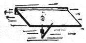
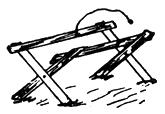

Here's another page of old-limey information taken from issues of THE FARM JOURNAL and SUCCESSFUL FARMING dated 1902, 1907, and 1908.
Keep the sheep dry under foot. A sheep thinks more of his feet than of his head.
The man who does not test his herd will very likely find some day that his brag cow is the poorest.
Write to your Congressman and ask him to vote for the Grout Bill. It may help him get down on the right side of the fence.
There are profit and success in the dairy business if one has the patience to master the little details. After all, life is made up of little things.
Have you a hitching-post with chain and snap just where you want your caller to leave his horse? If you haven't, he will quite likely hitch to one of your maples, or to the garden fence.
When the bull is a calf it is the time to develop the bullship in him.He should never be fondled. Use a small whip and teach him to back up, to stand around and to stop at the word. His bullship should be treated with firmness.
BY A. H. THROCKMORTON,ATTORNEY-AT-LAW
Tenant's Rights-Married Woman's Separate EstateSurface Wa l e r-Water Right, etc.
TENANT'S Rights: If the well on leased premises goes dry, can the landlord compel the tenant to drive a new one?
Michigan. A SUBSCRIBER.
In the absence of any provision in the contract of lease which may be construed to decide this point, the tenant can not be compelled to drive the well, nor can he compel the landlord to drive it. In the absence of a special covenant to that effect, the tenant can not be compelled to make repairs, nor does the landlord insure that the premises will remain in as good condition as at the time of the lease. The tenant may have to find water as best he can, but before renewing the lease should stip ulate for a better well.
A. dies within a year after his marriage, leaving a widow, but no children. Does his widow inherit his whole estate?
Pennsylvania. READER.
The widow takes one-half the personally absolutely, also one-half the real estate, including the mansion house and outbuildings around it, for life.
The husband's collateral heirs take one-half his estate, both real and personal, at once, and the remaining half of the realty upon the death of the widow.
Married Woman's Separate Estate: Will you please state whether the answer to " Old Subscriber " in the July number of FARM JOURNAL applies also to a case in Kansas? Has the wife the same property rights in this state that she has in Connecticut?
Kansas. L. P.
In Kansas, as in Connecticut, the wife, during her lifetime, has complete control over her separate property, free from any interference on .the part of the husband. In your state, however, should the wife die intestate, the husband would take one-half of the homestead in value, and also one-half of all other property, both real and personal. Should the wife leave no children nor descendants of children, the husband would be her sole heir, though by .will she could deprive him of half her property.
Surface 'Water; Noxious Weeds': 1. Has one farmer a right to turn surface water from his land on to that of his neighbor when it may be carried off over his own; and if not, what is the remedy? 2. Has a farmer any redress at law against a neighbor who does not destroy all kinds of weeds on his own farm?
Pennsylvania. J. K. H.
1. Ordinary improvements or changes on one's own land, which cause surface water to run off on to that of a neighbor, are not actionable, but where the surface waters are collected and cast in body upon the adjoining proprietor, this constitutes a nuisance for which remedy lies by action for damages or injunction. 2. Tire failure to keep one's own land free of weeds scarcely constitutes such a nuisance as twill give the adjoining owner legal redress.
Water Right: By an unrecorded written contract, B. obtained from A. the right to pipe water for twenty years from a spring on A.'s land. The contract expired several years ago, and about.the same time B. boarded up spring on A.'s land, so that in wet weather water overflows about two acres of A.'s land,which he has recently sold to C. Has C. any redress, B. having obtained water front the spring for over twenty years? M., New ] o rk.
The contract having expired without renewal B. has no longer the right to pipe water front C.'s land, and can be enjoined from so doing. The lapse of twenty years does not in this case affect the rights of the parties, since the water right was exercised by reason of the contract, and not merely by sufferance of A. and C., nor adversely to them.
Husband and Wife: I live with mywife and son on a farm which belongs to my wife, but which is worked by my son and myself. So long as I behave myself, has mywifethe right to turn me out of doors without remunera tion? W. C., Michigan.
In your state married women may hold and enjoy their separate property and make contracts in regard to the same as if unmarried. You are entitled to the same rights as any other tenant. Further, it is tire husband's duty to support his wife and provide a home for her ; if, having performed his duty in this respect, she refuses to live with him, he may in due ime secure a divorce.
United States Revenue Law : I am a farmer employing from one to three hands; they all use tobacco and whenever I go to the city want me to bring them a paper, plug or other small quantity. If I should uy a dollar's worth at a time, and furnish it to the hands as they want it, would this constitute a violation of the United States revenue laws?
Connecticut.CONSTANT READER.
Buying tobacco to sell again without license is illegal, but if your hands authorize you to buy tobacco for them and reimburse you out of their wages, you can do so without violation of the law.
[Legal inquiries from Our Folks may be submitted and will be answered in the paper each in its turn, if of interest to the general reader; but there will be so many questions that printed answers maybe long delayed. Those who want an immediate reply by mail should remit one dollar, addressed' Law Department," this office.]
With each new month do not forget Your calendar to rightly set.
Pare sweet potatoes before boiling.
Chop suet in a cool place, sprinkling with Sour to prevent its sticking together.
Do not let the winter go by without telling the neighbors about the FARM JOURNAL.
If the cellar threatens to freeze, carry down a half a pail of live, hardwood coals night and morning.
Put a basin of fresh water in a room where men have been smoking It will absorb much of the unpleasant odor by morning.
When frying pork chops or roasting pork, I dust it lightly with light brown sugar, as well as pepper and salt. It does not make the meat taste sweet, but adds a delicious flavor and makes the gravy richer and browner. R. B.
Fasten a strip of board to the wall and to it fasten a shelf with hinges beneath so the shelf can drop down. A triangular piece is fastened with hinges beneath shelf to swing out and hold shelf up, or fold back against the wall and let the shelf down flat.-Mra. Chas Colin, Idaho.
To hold . veal calves while butchering I made a rack as shown by taking some 2s4 pieces to make the crosses and come 4 inch fencing for the side rails. The rack is four feet long, has a rope with snap to pass over calf just in front of hind legs and fasten. Knock calf in head, place on rack and let head hang down over dish to catch the blood. Such a device can be used for tagging sheep. Edgar H. Swart, N. Y.
When you write to an advertiser tell him that you saw his card !n the Farm Journal. It !s to your interest to do so as Our Folks are treated honestly and served with th best Read the Fair Play notice on first page.
|
|
|
|
|
 |
 |
|